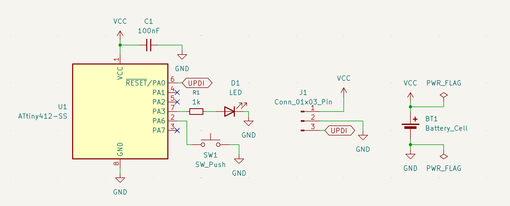
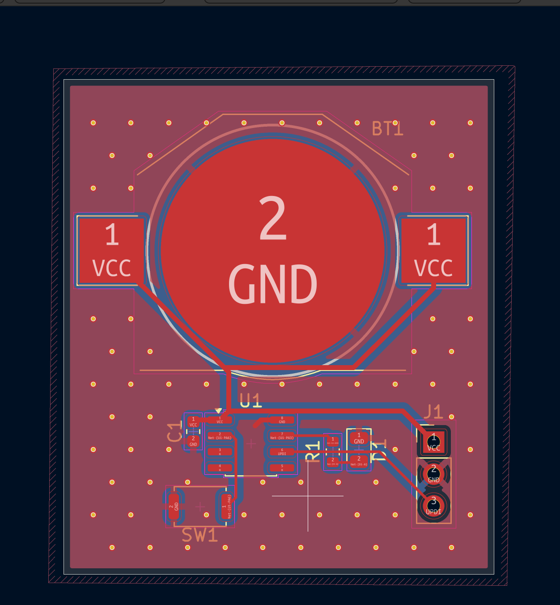
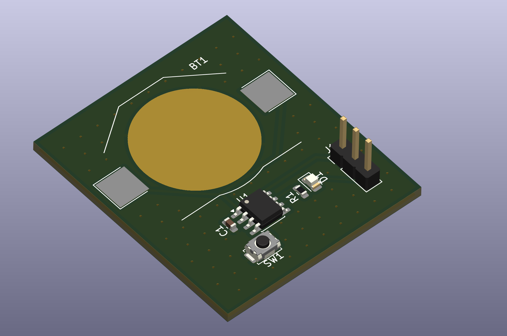
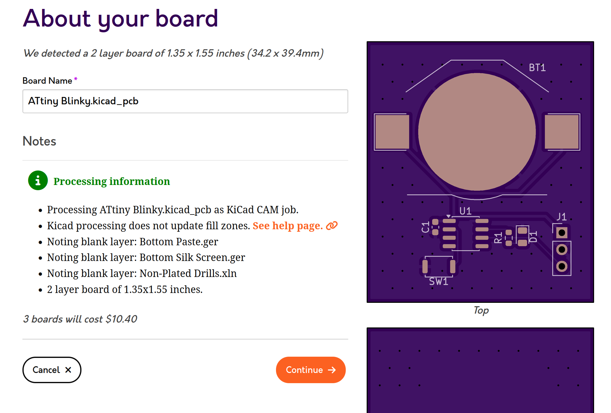

Example Guide: ATtiny412 Blinky
This guide walks through every step of the grant using one small example board: an ATtiny412, an LED, and a button, powered by a coin cell. It's meant to show the process. Please don't submit a copy of it. Your project should be your own idea!
The example project (KiCad files, journal, and firmware) is on GitHub: radeeyate/8-pin-grant-demo.
Contents
- Pick a chip
- Set up your repo and journal
- Draw the schematic
- Assign footprints
- Lay out the PCB
- Check your cost
- Submit
- Build and program it
- Ship it
1. Pick a chip
Browse the 8-pin MCU lists on DigiKey or Mouser. Open the datasheet of anything that looks interesting and find the pinout diagram. With only 8 pins, two go to power, so you have about 6 left for everything else.
For this example we use the ATtiny412 in SOIC-8:
| Pin | Name | Used for |
|---|---|---|
| 1 | VCC | Power (1.8V to 5.5V) |
| 2 | PA6 | Button |
| 3 | PA7 | Free |
| 4 | PA1 | Free |
| 5 | PA2 | Free |
| 6 | PA0 / UPDI | Programming |
| 7 | PA3 | LED |
| 8 | GND | Ground |
Before you commit to a chip, find out how it gets programmed (UPDI, SWD, ISP, etc.). Your board needs a way to connect a programmer to those pins.
Exposed ground pads (common on QFN/DFN-8 packages) are fine and don't count as more than 8 pins.
Need more pins?
- I2C/SPI I/O expanders are allowed. Limit one expander IC total per board.
- Shift registers (e.g. 74HC595) are allowed, but they may add at most 4 extra usable GPIO total across the whole board. Only 4 outputs may be used/connected; mark the rest NC.
- No cascading or chaining.
2. Set up your repo and journal
Make a GitHub repo before you start designing. You must spend at least 7 hours on your project, and the journal is how we check that. Write an entry every time you work on it: what you did, what broke, and how long it took. Screenshots help a lot.
my-8pin-project/
├── JOURNAL.md
├── README.md
├── hardware/ (KiCad project files)
├── firmware/ (your code)
└── bom.csvAn example journal entry:
## Oct 20 - 1.5 hours
- Picked the ATtiny412, read the pinout section of the datasheet
- Drew the schematic: MCU, decoupling cap, LED, button, UPDI header
- Ran ERC and fixed an unconnected power flag error
- Next: assign footprints3. Draw the schematic
Create a new KiCad project inside hardware/ and
open the schematic editor. Place these parts:
| Ref | Part | Why |
|---|---|---|
| U1 | ATtiny412 | The brain |
| C1 | 100nF capacitor | Decoupling, as close to VCC as possible |
| D1 | LED | Something to blink |
| R1 | 1kΩ resistor | Limits LED current |
| SW1 | Tactile button | Input (uses the internal pull-up) |
| J1 | 3-pin header | UPDI programming: VCC, GND, UPDI |
| BT1 | CR2032 holder | Power |
- PA3 → R1 → D1 → GND
- PA6 → SW1 → GND
- PA0 (UPDI) → J1 pin 3
- C1 between VCC and GND

Run Inspect → Electrical Rules Checker and fix every error before you move on.
Add part numbers now
For every part, open its properties and add a field called Part Number containing the manufacturer's part number (not the DigiKey/Mouser number). Doing it now saves pain later when you make the BOM.
For passives like resistors and capacitors, Octopart is helpful. Search for a value and package (e.g. "100nF 0805") to compare in-stock parts and prices across distributors.

4. Assign footprints
Open Tools → Assign Footprints. Every symbol needs a physical footprint that matches the exact part you're buying. Check the package dimensions in each datasheet.
- U1:
SOIC-8_3.9x4.9mm_P1.27mm - R1, C1, D1: 0805 SMD (easy to hand solder)
- J1:
PinHeader_1x03_P2.54mm_Vertical
Surface mount chips need room for a SOIC-8 clip, or a programming header like J1. Through-hole chips should have programming headers too.
5. Lay out the PCB
- Set up OSH Park's design rules first. Their directions are here.
- Press F8 (Update PCB from Schematic) to pull in your parts.
- Draw a board outline on
Edge.Cuts. Smaller boards cost less. - Place parts. Put C1 right next to U1's VCC pin.
- Route traces. Use thicker traces for power.
- Make a GND plane: add a copper zone on the GND net on both layers (2 layers only). Press B to fill zones.
- Add vias to stitch the top and bottom GND planes together, especially near ground pins and around the board edge.
- Add silkscreen: your name, the project name, and some art!
- Run Inspect → Design Rules Checker until it's clean.


6. Check your cost
PCBs
Upload your .kicad_pcb file to
OSH Park for a quote. They
charge $5 per square inch for 3 boards. For example, a
1.5" × 1.5" board is 2.25 sq in, which costs about
$11.25 for 3.

Parts
In the schematic editor, export a BOM that includes your Part Number field, then upload it to DigiKey or Mouser's BOM tool. Multiply by up to 3 if you want parts for every board.
| Item | Approx. cost |
|---|---|
| 3 PCBs (OSH Park) | board area (sq in) × $5 |
| 3× parts (MCU, passives, LED, button, holder, header) | ~$10 |
| Total | PCBs + parts, must be under $35 |
Prices are estimates. Check the real numbers for your own design. If you go over $35, you pay the difference.
Outside the US? You'll get a grant card instead, so you can buy cheaper parts and PCBs from local suppliers.
7. Submit
Make sure your repo has:
- The full KiCad project (schematic, PCB, project file)
- Your BOM with manufacturer part numbers
- A journal showing at least 7 hours of work
- A README with a picture and a short description
Then fill out the submission form. We aim to review within 3-5 days.
8. Build and program it
When your boards and parts arrive, solder the smallest parts first (the MCU and passives), then the bigger ones. Check for shorts between VCC and GND with a multimeter before you plug anything in.
The ATtiny412 programs over UPDI. We'll send you a programmer. Connect it to J1 (VCC, GND, UPDI). In the Arduino IDE, install the megaTinyCore board package, select ATtiny412, choose your programmer, and upload:
void setup() {
pinMode(PIN_PA3, OUTPUT);
pinMode(PIN_PA6, INPUT_PULLUP);
}
void loop() {
int delayMs = digitalRead(PIN_PA6) == LOW ? 100 : 500;
digitalWrite(PIN_PA3, HIGH);
delay(delayMs);
digitalWrite(PIN_PA3, LOW);
delay(delayMs);
}
The LED blinks slowly, and fast while the button is held. Put
your code in firmware/ and commit it.
9. Ship it
Record a short video of your board working and share it in #8-pin-grant. Add it to your README too. We might send a sticker!
Make yours better than this one
This example only uses 2 of the free pins. Ideas for yours: a buzzer, a light sensor, more LEDs, a fun board shape, a 3D printed case. Stuck? Try the idea generator on the main page.